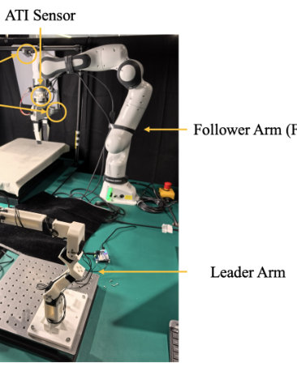
Franka Robotics GmbH (formerly Franka Emika, now part of Agile Robots) · 7-DoF arm (torque-sensing collaborative arm)
💲 ≈ $30,000–35,000 (2025, US; official price on request; academic quotes vary)
A lightweight 7-DoF arm with torque sensors in every joint. Researchers use it because the Franka Control Interface gives 1 kHz low-level torque control, it works with ROS, ROS 2 and MATLAB, and it is the arm used in large robot-learning datasets such as DROID. The original Panda is discontinued, and the FR3 replaces it.
| DoF | 7 |
|---|
| Payload | 3 kg |
|---|
| Reach | 855 mm |
|---|
| Weight | ≈ 17.8 kg (arm) |
|---|
Used in 125 CoRL 2026 papers
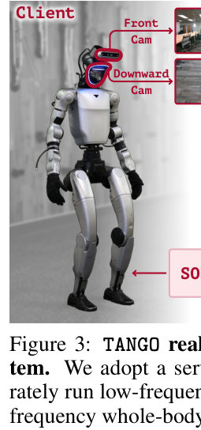
Unitree Robotics (Hangzhou Yushu Technology Co., Ltd.) · humanoid
💲 ≈ $43,900 (2025) for the G1 EDU Standard (23 DoF) from US resellers. EDU versions with dexterous hands cost about $44,800 to $83,900. The basic G1 without full developer access costs about $16,000 (2024).
A small, low-cost humanoid that walks on two legs, launched in 2024, with a depth camera, 3D LiDAR and an NVIDIA Jetson Orin computer on the EDU versions. Researchers use it because it is affordable and supports low-level control through unitree_sdk2, which makes it a common platform for learning locomotion, whole-body control and manipulation.
| DoF | 23 (EDU Standard); 23–43+ depending on configuration |
|---|
| Payload | ≈3 kg per arm (EDU) |
|---|
| Weight | ≈35 kg with battery |
|---|
| Height | ≈1.32 m standing (≈1.27 m in some listings) |
|---|
| Speed | up to 2 m/s |
|---|
| Battery | 9000 mAh quick-release lithium battery, about 2 h runtime |
|---|
Used in 66 CoRL 2026 papers
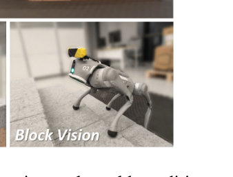
Unitree Robotics (Hangzhou Yushu Technology Co., Ltd.), China · quadruped (12-DoF legged robot)
💲 ≈ $11,200–$13,900 for Go2 EDU Standard (2025–26, reseller prices; Unitree gives EDU pricing on request). The Pro is ≈ $3,790.
A small, agile, low-cost robot dog from 2023 with 12 brushless joint motors, a 3D LiDAR and a wide-angle camera, sold in Air, Pro and EDU versions. Researchers buy the EDU version because it comes with the full SDK, ROS support and optional NVIDIA Jetson computers, which makes it a common platform for sim-to-real reinforcement learning of legged locomotion, navigation and loco-manipulation.
| DoF | 12 (3 per leg) |
|---|
| Payload | ≈8 kg (max ≈12 kg on EDU) |
|---|
| Weight | ≈15 kg with battery |
|---|
| Height | 40 cm standing (70 × 31 × 40 cm; 20 cm crouched) |
|---|
| Speed | 0–3.7 m/s (up to ≈5 m/s peak) |
|---|
| Battery | 8,000 mAh standard or 15,000 mAh long-range (EDU), 28–33.6 V, ≈2–4 h |
|---|
| Peak joint torque | ≈45 N·m |
|---|
Used in 24 CoRL 2026 papers
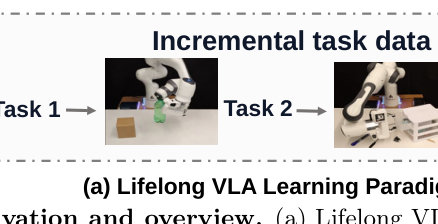
UFACTORY (Shenzhen UFACTORY Co., Ltd.) · 7-DoF arm (collaborative robot)
💲 ≈ $10,200–11,000 for the arm alone (2025)
A low-cost 7-axis collaborative robot arm. The extra 7th joint gives it redundancy, so it can reach around obstacles and work in tight spaces. Researchers use it widely for robot learning, teleoperation and manipulation because it is affordable, has open Python/C++/ROS/ROS2 SDKs and has ±0.1 mm repeatability.
| DoF | 7 |
|---|
| Payload | 3.5 kg |
|---|
| Reach | 700 mm |
|---|
| Weight | 13.7 kg |
|---|
| Speed | 1 m/s max end-effector speed; 180°/s max joint speed |
|---|
| Repeatability | ±0.1 mm |
|---|
Used in 21 CoRL 2026 papers
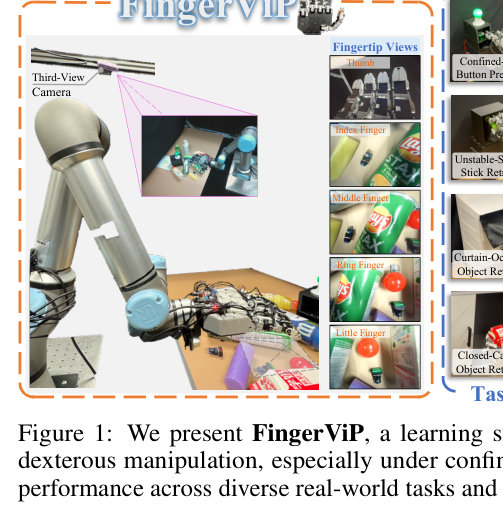
Universal Robots (Denmark, part of Teradyne) · 6-DoF collaborative robot arm (cobot)
💲 Discontinued (replaced by the UR7e); last price ≈ $36,500–$40,000 for the arm, controller and teach pendant (2025)
A medium-size collaborative industrial arm that can carry up to 5 kg and reach 850 mm. Researchers use it because it is a reliable, repeatable (±0.03 mm) and widely supported arm with a built-in force/torque sensor, ROS drivers and a real-time control interface, which makes it a common platform for manipulation and imitation-learning datasets. Universal Robots has since replaced it with the UR7e (now called UR7e-920), which has the same 850 mm reach and a 7.5 kg payload.
| DoF | 6 rotating joints (±360° each) |
|---|
| Payload | 5 kg (11 lb) |
|---|
| Reach | 850 mm (33.5 in) |
|---|
| Weight | 20.7 kg (45.7 lb) |
|---|
| Speed | Joints max 180°/s; tool about 1 m/s |
|---|
Used in 19 CoRL 2026 papers
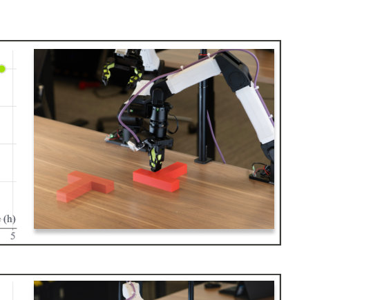
I2RT Robotics · 6-DoF arm with parallel gripper
💲 ≈ $2,999 per arm for the standard YAM (2025); YAM Pro $3,499, YAM Ultra $4,299, BIG YAM $4,999, YAM Leader teleop arm $2,999
YAM is I2RT's main robot arm. It is a low-cost 6-DoF arm driven over CAN bus with a 95 mm linear gripper, built for real-world research and embodied-AI data collection. Researchers use it because it is affordable, comes with a Python SDK, a MuJoCo model, gravity compensation and leader-arm teleoperation, and is often set up as a bimanual pair to collect imitation-learning data.
| DoF | 6 (plus a 95 mm-stroke gripper) |
|---|
| Payload | 2 kg nominal (Pro 3 kg, Ultra 4 kg) |
|---|
| Reach | 750 mm maximum workspace |
|---|
| Weight | 5.02 kg including gripper |
|---|
| Interface | CAN bus at 1 Mbit/s |
|---|
| Actuators | 3× DM4340 (shoulder) and 3× DM4310 (elbow/wrist) |
|---|
Used in 17 CoRL 2026 papers
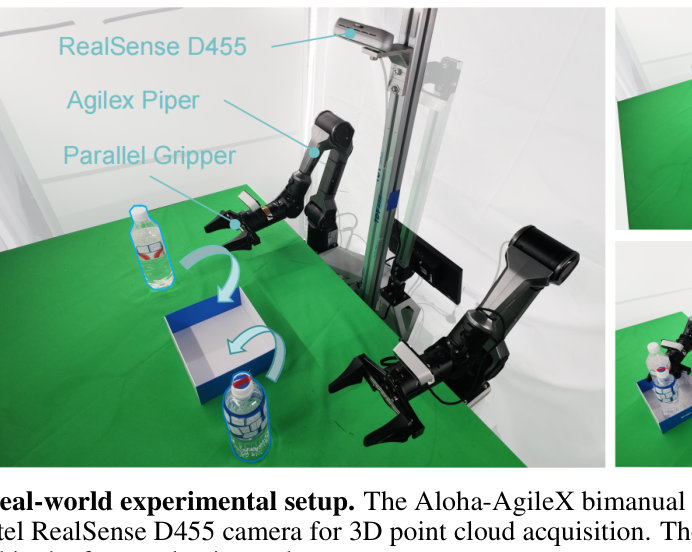
Trossen Robotics sold the kits; the open-source design came from Stanford (Tony Z. Zhao, Zipeng Fu, Chelsea Finn) · Bimanual teleoperation system: two 6-DoF leader/follower arm pairs (Mobile ALOHA puts them on a wheeled mobile base)
💲 Discontinued; last list price $36,999.95 for Aloha Mobile and $32,999.95 for Aloha Stationary with laptop (≈2024). The Stanford DIY build cost ≈ $32,000.
A low-cost, open-source two-arm teleoperation rig. Smaller WidowX 250 leader arms control larger ViperX 300 follower arms, and wrist and top cameras record the demonstrations. Mobile ALOHA adds an AgileX Tracer wheeled base for whole-body mobile manipulation. Researchers use it to collect demonstration data and train imitation-learning policies such as ACT and diffusion policies for bimanual tasks. Trossen has discontinued the Aloha kits and rebranded the line as Trossen AI (Mobile AI / Stationary AI).
| DoF | 16 (14 across the two 6-DoF arms plus grippers, and 2 for the base) |
|---|
| Payload | 750 g per arm; 55 kg base |
|---|
| Reach | 750 mm (ViperX 300 follower arm) |
|---|
| Weight | 75 kg (Mobile ALOHA) |
|---|
| Height | 140 cm (80 W × 84 L × 140 H cm, without leader arms) |
|---|
| Battery | ≈12 h (1620 Wh) |
|---|
Used in 16 CoRL 2026 papers
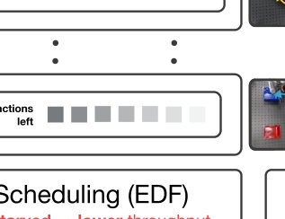
AgileX Robotics · 6-DoF arm (with optional parallel gripper)
💲 ≈ $2,499 (2024 launch list price for the arm with gripper; US resellers charged about $2,800–$4,000 in 2025)
PiPER is a low-cost, lightweight 6-DoF desktop arm from AgileX for robotics research, teaching and physical-AI work like grasping, assembly and robot data collection. Researchers use it because it is cheap, easy to move and set up, and works with Python and ROS1/ROS2. That makes it a common choice for imitation-learning and teleoperation data collection, often with two arms side by side.
| DoF | 6 (plus 1 for the gripper) |
|---|
| Payload | 1.5 kg |
|---|
| Reach | 626 mm |
|---|
| Weight | 4.2 kg |
|---|
| Repeatability | ±0.1 mm |
|---|
| Operating temperature | −20 °C to 50 °C |
|---|
Used in 14 CoRL 2026 papers
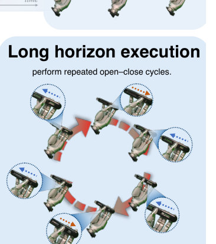
Sharpa (Sharpa Robotics, Singapore) · dexterous hand (5-finger, tactile)
💲 ≈ $50,000 per hand (2026; Sharpa does not publish a price, this is the US reseller price for the W01, and other resellers list $55,000)
A human-sized five-finger robotic hand with 22 active DoF and a Dynamic Tactile Array (DTA) touch sensor in each finger. Researchers use it for physical AI and dexterous manipulation work, including learning from human video (e.g., EgoScale) and NVIDIA's Isaac GR00T reference humanoid. It comes with ROS 2, MuJoCo, Isaac Sim and SharpaPilot SDK support.
| DoF | 22 active |
|---|
| Payload | 40 kg (grip force 150 N, fingertip force 20 N) |
|---|
| Weight | 1.3 kg |
|---|
| Dimensions | 208 × 90 × 50 mm |
|---|
| Speed | 4 Hz full-hand gesture frequency, 500 Hz control |
|---|
| Tactile sensing | Dynamic Tactile Array, 240×240 resolution at 180 fps per fingertip |
|---|
| Voltage | 18–28 V |
|---|
Used in 14 CoRL 2026 papers
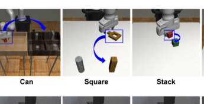
Trossen Robotics (Interbotix) · 6-DoF tabletop robot arm with parallel gripper
💲 ≈ $3,905 (2025; Standard Tabletop Base version, $3,849.95 with Compact Base; final price can change with tariffs)
A low-cost, open-source robot arm driven by DYNAMIXEL X-Series servos, with ROS/ROS 2 support. Many robot-learning groups use it for teleoperated data collection and policy testing, for example in the BridgeData V2 dataset and with Open X-Embodiment/Octo/OpenVLA policies, because it is cheap, easy to copy between labs and widely supported. Trossen now also sells a separate, much pricier 'WidowX AI' arm, which is a different product.
| DoF | 6, plus gripper (9 servos in total) |
|---|
| Payload | 250 g working payload |
|---|
| Reach | 650 mm (1300 mm total span) |
|---|
| Weight | ≈ 2.4 kg (5.2 lb, from an older Trossen product page) |
|---|
| Repeatability | 1 mm (accuracy 5–8 mm) |
|---|
| Gripper stroke | 30–74 mm |
|---|
Used in 13 CoRL 2026 papers
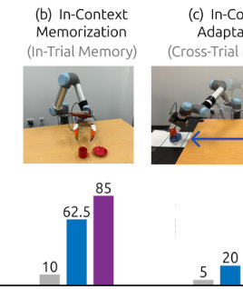
ARX Robotics (方舟无限 / ARX Technology, Shenzhen, China); sold internationally by ARX Global · 6-DoF lightweight force-controlled robot arm
💲 ≈ $8,333 for one X5 arm from a US reseller (2026); a full bimanual platform (2 X5 follower arms, 2 leader arms, cameras) was advertised at $6,999 for the first 100 units
A low-cost, lightweight 6-DoF arm with a gripper, made for research and teleoperation. Labs use it for imitation learning, bimanual leader-follower data collection and VLA policies (for example π0) because it has open C++/Python SDKs, ROS/ROS2 support and a well-known community controller (real-stanford/arx5-sdk).
| DoF | 6 joints plus a 1-DoF parallel gripper |
|---|
| Payload | ≈ 1.5 kg (from memory, not confirmed; the reseller says full payload is not published) |
|---|
| Reach | ≈ 620 mm (from memory, not confirmed) |
|---|
| Weight | ≈ 3.4 kg (from memory, not confirmed) |
|---|
| Interface | CAN bus; C++/Python SDK, ROS/ROS2 |
|---|
Used in 12 CoRL 2026 papers
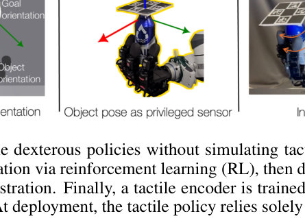
Wonik Robotics (South Korea; formerly SimLab; built on technology licensed from KITECH) · dexterous hand (4-finger, 16-DoF)
💲 ≈ $9,910 (V4, reseller list price, 2025); newer versions V5 ≈ $6,650 to V6 V ≈ $19,820
A four-fingered robotic hand with 16 independently torque/current-controlled joints, sold as a relatively low-cost platform for grasping and in-hand manipulation research. Researchers use it because it is affordable, it has an open-source ROS/Linux software stack, and many published dexterous-manipulation papers use it, so results can be reproduced on the same hand.
| DoF | 16 active (4 fingers × 4 joints) |
|---|
| Payload | 5 kg |
|---|
| Weight | 1.08 kg (finger 0.17 kg, thumb 0.19 kg) |
|---|
| Speed | 0.11 s/60° max joint speed |
|---|
| Max torque | 0.70 Nm per joint (gear ratio 1:369) |
|---|
| Communication | CAN at 333 Hz |
|---|
| Power | 24 VDC / 100 W (older docs: 12–24 V, 120 W) |
|---|
| Joint resolution | 0.002° (potentiometer) |
|---|
Used in 11 CoRL 2026 papers
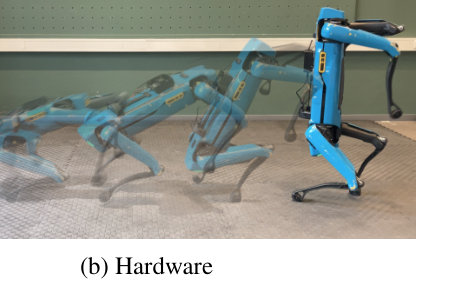
Boston Dynamics (owned by Hyundai Motor Group) · quadruped
💲 ≈ $74,500 (2020, base Spot Explorer Kit; academic discount available; current price on request)
Spot is an all-electric, battery-powered robot dog built for industrial inspection and research. It can walk over rough ground and climb stairs, carries payloads, and comes with an SDK, so researchers use it for legged locomotion, navigation, mobile manipulation (with the Spot Arm) and robot-learning work.
| DoF | 12 (3 per leg) |
|---|
| Payload | 14 kg max (newer Boston Dynamics spec: 20.43 kg recommended) |
|---|
| Weight | 33.8 kg with battery |
|---|
| Height | ≈ 0.61 m standing (≈ 1.1 m long × 0.5 m wide) |
|---|
| Speed | 1.6 m/s max |
|---|
| Battery | 564 Wh swappable, ≈ 90 min runtime |
|---|
Used in 9 CoRL 2026 papers
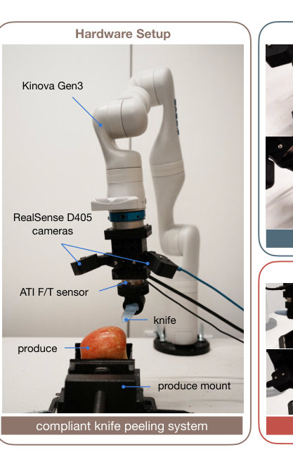
Kinova Inc. (Canada) · 7-DoF arm (6-DoF version also sold)
💲 ≈ $35,000 USD for the 7-DoF arm only, without gripper or vision (≈ $38,700 with brakes); seen on a reseller listing in 2025 (year approximate). Kinova does not publish a list price, so get a quote.
A light, modular arm with the controller built in, torque sensors in every joint, joints that can rotate without limit, 1 kHz low-level control and an optional 2D/3D vision module. Researchers use it for manipulation and robot-learning work because it is portable, safe to work next to, and has open Python/C++ APIs and ROS/ROS 2 support.
| DoF | 7 (6-DoF version available) |
|---|
| Payload | 4 kg continuous at mid-range; 2 kg continuous at full reach |
|---|
| Reach | 902 mm (7-DoF); 891 mm (6-DoF) |
|---|
| Weight | 8.2 kg (7-DoF); 7.2 kg (6-DoF) |
|---|
| Speed | ≈ 50 cm/s maximum end-effector speed |
|---|
| Power consumption | 36 W |
|---|
Used in 9 CoRL 2026 papers
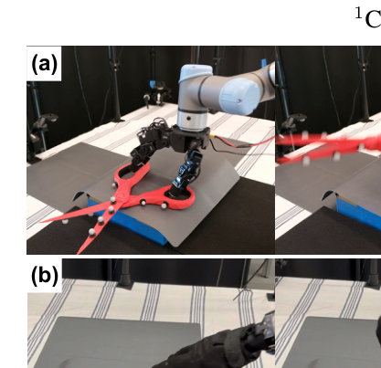
Carnegie Mellon University (Pathak Lab); ROBOTIS sells the official parts bundle · 16-DoF dexterous hand (4 fingers, open source)
💲 ≈ $1,839 (2025) for the ROBOTIS LEAP Hand Bundle (XC330), which you assemble yourself; building from parts costs about $2,000
An open-source, human-like robot hand with four fingers, built from 3D-printed parts and Dynamixel servos. Its joint layout keeps the fingers dexterous in any pose. Researchers use it because it costs about $2,000 (about 1/8 the price of an Allegro Hand), is strong and easy to repair, and comes with sim-to-real tools and ROS, Python and C++ APIs.
| DoF | 16 (4 fingers × 4 joints) |
|---|
| Payload | about 19.5 N pull-out force per finger; held 2 kg on one fingertip for 1 h |
|---|
| Weight | 595 g |
|---|
| Actuators | 16 Dynamixel servos (12 XC330-M288-T and 4 XC330-M181-T) |
|---|
Used in 9 CoRL 2026 papers
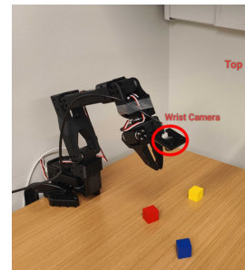
TheRobotStudio, working with Hugging Face (LeRobot). Kits are sold by Seeed Studio, WowRobo, Partabot and others · Low-cost, open-source, 3D-printable 6-DoF desktop arm (5 joints plus a gripper), usually sold as a leader + follower pair for teleoperation
💲 ≈ $240 (2025) for the SO-ARM101 Pro leader + follower motor kit from Seeed/AliExpress, without 3D-printed parts (about $35 extra). A DIY build costs about $130 per arm. The Pro kit sold fully assembled costs about $399.
An open-source, 3D-printable arm driven by Feetech STS3215 serial-bus servos. It works directly with Hugging Face's LeRobot framework. Researchers use it because it costs only a few hundred dollars and makes leader-follower teleoperation, dataset collection and imitation-learning tests (e.g. ACT, diffusion policies, VLAs) easy and repeatable. The SO-101 is the upgraded, easier-to-build version of the SO-100.
| DoF | 6 (5 arm joints + 1 gripper) |
|---|
| Payload | ≈ 300–500 g (unofficial community estimates, depends on pose) |
|---|
| Reach | ≈ 450–500 mm (unofficial community estimates) |
|---|
| Weight | ≈ 0.8 kg per arm (unofficial community estimate, PLA print) |
|---|
| Actuators | 6× Feetech STS3215 servos with 12-bit magnetic encoders; Pro follower arm uses 12 V, 1/345 gearing, ≈ 30 kg·cm |
|---|
| Power | Pro kit: 12 V for the follower arm, 5 V for the leader arm |
|---|
| Interface | USB-C serial bus servo driver board |
|---|
Used in 9 CoRL 2026 papers
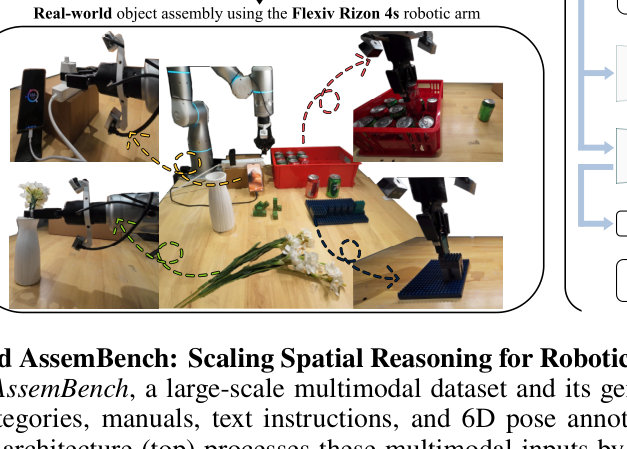
Flexiv Ltd. · 7-DoF force-sensitive collaborative arm
💲 ≈ $23,450 (2025, reseller price for the Rizon 4 arm; the official price is on request)
Rizon 4 is a 7-axis 'adaptive' robot arm that can sense force through its whole body and detect forces as small as about 0.1 N. Researchers use it for contact-rich manipulation and imitation-learning work, such as assembly, insertion, wiping and polishing, because it offers compliant hybrid motion/force control and a Python/C++ SDK (Flexiv RDK).
| DoF | 7 |
|---|
| Payload | 4 kg |
|---|
| Reach | 780 mm |
|---|
| Weight | 20 kg |
|---|
| Speed | 1.0 m/s max TCP speed |
|---|
| Repeatability | ±0.05 mm (some sources say 0.1 mm) |
|---|
| Force sensing | down to 0.1 N |
|---|
| Protection | IP65 |
|---|
Used in 8 CoRL 2026 papers
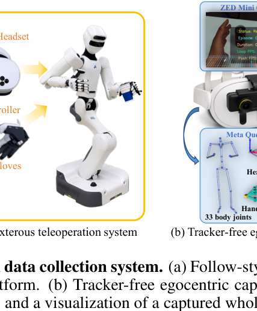
ROBOTERA (Beijing Xingdong Jiyuan / 星动纪元) · dexterous hand (5-finger, fully actuated)
💲 ≈ $17,000 per hand (left or right, RobotShop US retail incl. tariffs, 2025)
A human-sized five-finger robotic hand with 12 joints, each driven by its own gear motor. Each joint can be back-driven and force-controlled, and the fingertips have tactile sensors that measure 3D force and temperature. Researchers mount it on arms or humanoids such as the Unitree H1 for teleoperation, imitation learning and reinforcement learning in dexterous manipulation.
| DoF | 12 active, 0 passive (thumb 3, index 3, middle/ring/little 2 each) |
|---|
| Payload | max grasp 25 kg palm-up (16 kg palm-sideways); grip force 80 N whole hand; fingertip force 15 N |
|---|
| Weight | 1.1 kg |
|---|
| Size | 191 × 94 × 47 mm (adult-hand size) |
|---|
| Speed | open/close repetition >2 Hz |
|---|
| Accuracy | fingertip repeatability ±0.20 mm |
|---|
| Sensing | fingertip tactile arrays (10×12×5, 270° coverage) measuring 3D force and temperature |
|---|
| Power | 48 V (supplied 48 V / 3 A adapter) |
|---|
Used in 7 CoRL 2026 papers
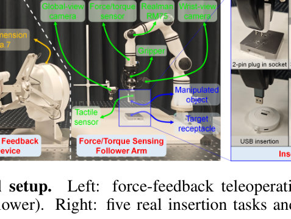
RealMan Robotics (RealMan (Beijing) Intelligent Technology Co., Ltd.) · 6-DoF lightweight collaborative arm (7-DoF RM75 variant also available)
💲 ≈ $17,670 (2025, RobotShop US price incl. tariffs; RM75-B 7-DoF ≈ $23,550; EU reseller price for RM65-B is €17,599.95)
A 6-DoF robot arm weighing about 7 kg with a humanoid joint layout and a controller built into the base, sold in Standard and Six-Axis Force versions. Researchers use it because it is light and easy to integrate, which makes it a common choice for single-arm and dual-arm mobile manipulation, teleoperation and data collection.
| DoF | 6 (RM65); 7 (RM75) |
|---|
| Payload | 5 kg rated (RM75-B peak 9 kg) |
|---|
| Reach | 610 mm (610–627 mm across RM65 variants) |
|---|
| Weight | 7.2 kg incl. built-in controller (RM75-B: 7.8 kg) |
|---|
| Repeatability | ±0.05 mm |
|---|
| Protection | IP54 (RM75-B listing) |
|---|
Used in 6 CoRL 2026 papers
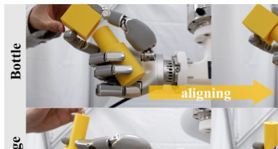
Wuji Technology (WUJI TECH, Shanghai Wuji Technology Co., Ltd.) · dexterous hand (20-DoF five-finger humanoid hand)
💲 ≈ $5,500 (2025, launch price; about ¥50,000 in China). US resellers list it for about $15,500–16,000
A human-sized, five-finger dexterous robot hand released in September 2025. Its 20 active joints are directly driven by small brushless motors built into the fingers, and it is controlled with FOC vector control. Researchers use it for dexterous manipulation, teleoperation with the Wuji Glove, and collecting robot-learning data, because it offers high dexterity at a low price and comes with an open SDK.
| DoF | 20 active (4 per finger, fully direct-drive) |
|---|
| Payload | 10 kg full-hand static grasp load; 15 N fingertip force |
|---|
| Weight | 580 ± 10 g (excluding cables) |
|---|
| Dimensions | 201 × 75 × 50 mm |
|---|
| Max grasp diameter | 100 mm |
|---|
| Repeatability | ±1 mm |
|---|
| Interface | USB 2.0 |
|---|
Used in 5 CoRL 2026 papers
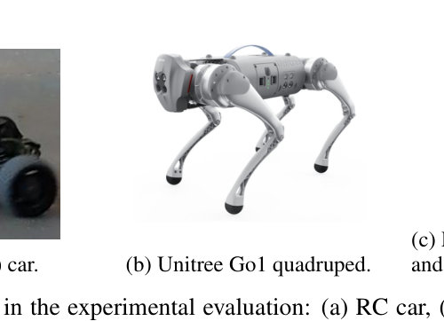
Unitree Robotics · quadruped
💲 discontinued; last list price ≈ $8,500 for Go1 EDU (2021 launch price, plus about $1,000 shipping; Air from $2,700, Pro $3,500); official sales ended around 2023
A small, light quadruped robot dog with 12 actuated joints that came out in 2021. It's widely used in legged locomotion and reinforcement-learning research, including sim-to-real transfer, because it was cheap and robust for its class. The EDU version adds low-level SDK and ROS access, foot force sensors, a higher payload and an upgradeable Jetson compute module.
| DoF | 12 (3 per leg) |
|---|
| Payload | 5 kg (EDU; 3 kg other versions) |
|---|
| Weight | 12 kg (with battery) |
|---|
| Height | 0.40 m standing (L×W×H 0.645 × 0.28 × 0.40 m) |
|---|
| Speed | 3.7 m/s max (Air 2.5 m/s; Unitree's marketing claims up to 4.7 m/s) |
|---|
| Battery | 6000 mAh standard / 9000 mAh long-range; 1–2 h runtime |
|---|
Used in 5 CoRL 2026 papers
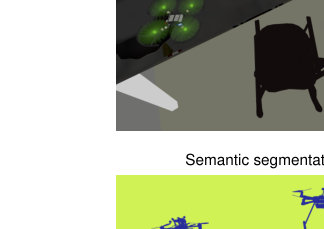
Bitcraze AB (Sweden) · Nano quadcopter (open-source micro aerial vehicle / flying development platform)
💲 $240 (2025)
A 29 g open-source quadcopter that fits in your palm. It is built around a dual-MCU board, a low-latency radio plus Bluetooth LE, and plug-in expansion decks for positioning and sensing. Researchers use it for learning-based control, swarm and multi-robot experiments, and sim-to-real work in small indoor spaces because it is cheap, safe, fully open and supported by Python and ROS tools.
| DoF | Quadrotor with 4 rotors (6-DoF motion in free flight) |
|---|
| Payload | 15 g max recommended |
|---|
| Weight | 29 g takeoff weight |
|---|
| Height | 29 mm (size 92 x 92 x 29 mm, motor to motor) |
|---|
| Battery | Stock LiPo: about 7 min flight time, 40 min to charge |
|---|
| Range | Over 1 km radio range line-of-sight (tested with Crazyradio PA) |
|---|
Used in 4 CoRL 2026 papers
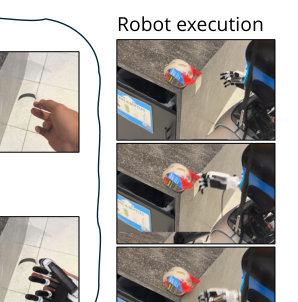
Inspire Robots (Beijing Inspire-Robots Technology Co., Ltd.) · dexterous hand (5 fingers, 6 actuated DoF, 12 joints)
💲 ≈ $4,500–6,500 per hand (2025–2026, RH56DFX, US resellers; reseller prices range from about $3,100 on Alibaba to $10,500)
A low-cost five-finger humanoid hand. Six small linear servo actuators move 12 joints, and the hand has built-in force sensing and RS485/CAN control with ROS support. Researchers use it for teleoperation, imitation learning and dexterous grasping, often mounted on robot arms or on humanoids such as the Unitree G1/H1, because it costs much less than hands like the Allegro or Shadow.
| DoF | 6 actuated DoF / 12 joints |
|---|
| Payload | ≈ 3 kg load capacity; fingertip force 15 N (thumb) / 10 N (other fingers); force resolution 0.5 N |
|---|
| Weight | 540 g |
|---|
| Speed | four-finger flexion 260°/s; thumb flexion 70°/s; thumb rotation 107°/s |
|---|
| Repeatability | ±0.20 mm |
|---|
| Power | 24 V DC ±10%; peak current 2 A |
|---|
| Interface | RS485 / CAN, with ROS plugins |
|---|
Used in 4 CoRL 2026 papers
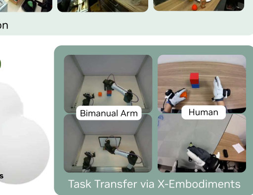
AgiBot (AGIBOT Innovation (Shanghai) Technology Co., Ltd.) · wheeled dual-arm humanoid mobile manipulator
💲 ≈ $64,220 (2026, reseller price; AgiBot doesn't publish one, so official price is on request)
AgiBot G1 is a wheeled humanoid with two arms, a waist that can lift and bend, and a head that turns. It is built for collecting teleoperation data and running AI models on the robot. Researchers use it because it was the main platform behind the large AgiBot World manipulation dataset, and it has force sensing in both arms, 8 cameras and an NVIDIA Jetson AGX Orin computer.
| DoF | 20 DoF excluding end-effectors (26 DoF total including head and waist), with 6-DoF hands that can be swapped for two-finger grippers |
|---|
| Payload | 3 kg per arm, held continuously (an official operating example, not a rated maximum) |
|---|
| Reach | 70 cm span per arm; can work at heights over 2 m |
|---|
| Weight | 150 kg |
|---|
| Height | 130–180 cm (adjustable) |
|---|
| Battery | 4 h+ runtime |
|---|
Used in 4 CoRL 2026 papers
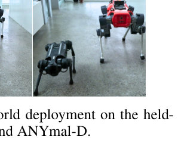
ANYbotics AG (spin-off of ETH Zurich) · quadruped (legged robot)
💲 on request (no official public price; one reseller lists ANYmal D at ≈ $150,000 and the earlier ANYmal C at ≈ $140,000, 2025)
ANYmal D is a rugged, waterproof (IP67) four-legged robot built for autonomous inspection at industrial sites. ANYbotics also sells it to universities through its ANYmal Research program. Researchers use it because it has torque-controlled series-elastic joints and an open ROS-based software stack, which makes it a standard platform for learned legged walking, navigation, perception and mobile-manipulation work.
| DoF | 12 (3 per leg) |
|---|
| Payload | 10 kg nominal (up to 15 kg with reduced performance) |
|---|
| Weight | ≈ 50 kg |
|---|
| Height | 890 mm (about 930 × 530 × 890 mm overall) |
|---|
| Speed | up to 1.3 m/s (0.75 m/s recommended for efficiency) |
|---|
| Battery | 932.4 Wh swappable battery, 90–120 min runtime |
|---|
Used in 4 CoRL 2026 papers
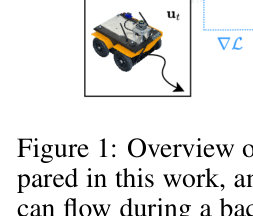
Clearpath Robotics (part of Rockwell Automation since 2023) · Wheeled mobile robot (4-wheel skid-steer unmanned ground vehicle)
💲 Official price on request; base Jackal ≈ €14,560 excl. VAT from a reseller, roughly $15,000–20,000 (2025). Husky A300 base ≈ €22,500 excl. VAT (2025)
Jackal is a small, fast, weatherproof outdoor robot base with an aluminum chassis. It comes with an onboard computer, GPS, IMU and full ROS support, so labs use it for navigation, field-robotics and robot-learning work without building their own base. The larger Husky carries much heavier loads (about 100 kg on the A300) and is used when bigger sensor or arm payloads are needed.
| Payload | 20 kg |
|---|
| Weight | 17 kg |
|---|
| Height | 250 mm |
|---|
| Speed | 2.0 m/s max |
|---|
| Battery | Lithium-ion, about 4 h runtime with basic use (about 2 h with heavy use) |
|---|
Used in 4 CoRL 2026 papers
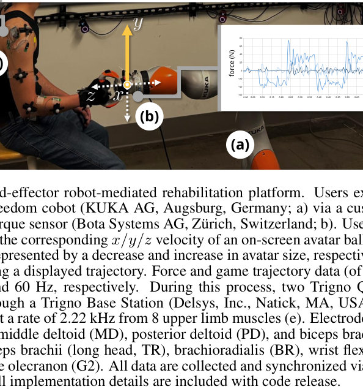
KUKA (KUKA AG / KUKA Deutschland GmbH, Augsburg, Germany; owned by Midea) · 7-DoF collaborative arm (torque-sensing lightweight robot)
💲 on request (no public list price); third-party estimates put a new one at ≈ $50,000–70,000 (2026)
A lightweight 7-axis collaborative arm with torque sensors built into every joint. It can sense contact and move compliantly, which is useful for safe work near people, assembly and force-controlled tasks. Researchers use it for impedance and force control, contact-rich manipulation and robot-learning experiments, often through the FRI or ROS interfaces.
| DoF | 7 |
|---|
| Payload | 14 kg (iiwa 14 R820); 7 kg for iiwa 7 R800 |
|---|
| Reach | 820 mm (iiwa 14 R820); 800 mm for iiwa 7 R800 |
|---|
| Weight | ≈ 30 kg (arm only) |
|---|
| Repeatability | ±0.15 mm (ISO 9283) |
|---|
| Controller | KUKA Sunrise Cabinet |
|---|
| Mounting | Floor, ceiling or wall |
|---|
Used in 4 CoRL 2026 papers
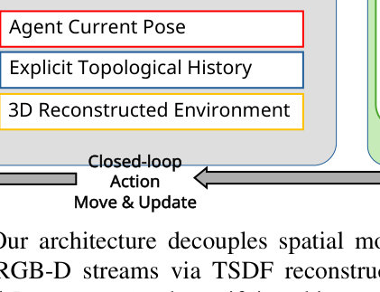
ROBOTIS (co-developed with Open Robotics) · Small differential-drive wheeled mobile robot (ROS platform)
💲 ≈ $681 (2025; ROBOTIS international store, Burger RPi4 4GB); third-party trackers report ≈ $784 at the ROBOTIS US store
A small, low-cost, open-source ROS mobile robot with a 360° LiDAR, a 9-axis IMU and wheel encoders. It can do SLAM and navigation out of the box. Researchers use it as a cheap, easy-to-simulate and well-supported base for navigation, multi-robot and sim-to-real learning experiments. Note: robot-learning papers also often use the older TurtleBot2 (Kobuki base) and the newer TurtleBot 4 (Clearpath/iRobot Create 3 base); this answer covers the Burger, the most common TurtleBot3 model.
| DoF | 2 driven wheels (DYNAMIXEL X-series servos), differential drive |
|---|
| Payload | 15 kg |
|---|
| Height | 192 mm (138 x 178 x 192 mm L x W x H) |
|---|
| Weight | ≈ 1 kg (from the manufacturer spec sheet; not checked in this search) |
|---|
| Speed | 0.22 m/s max translational velocity |
|---|
| Battery | 11.1 V LiPo, ≈1,800 mAh, about 2.5 h runtime (from the manufacturer spec sheet; not checked in this search) |
|---|
Used in 3 CoRL 2026 papers
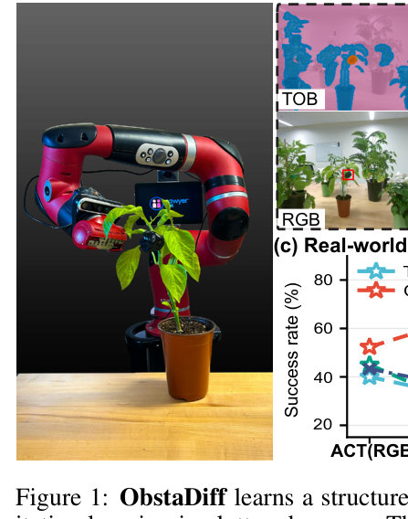
Rethink Robotics (Boston, USA). After it closed in 2018, the HAHN Group's Rethink Robotics GmbH made it until 2024 · 7-DoF single-arm collaborative robot arm (cobot) with a head display and built-in cameras
💲 discontinued: ≈ $29,000 list price at launch (2015). RobotShop currently lists it at $10,000 (2025)
Sawyer is a one-armed collaborative robot from 2015. Each joint uses series elastic actuators with force sensing, so it is compliant and safe to work next to. Researchers like it because the Sawyer SDK gives ROS access to joint position, velocity and torque control, the cameras and the Gazebo simulator, which is why it shows up in many robot-learning and manipulation papers.
| DoF | 7 |
|---|
| Payload | 4 kg (8.8 lb) |
|---|
| Reach | 1260 mm |
|---|
| Weight | 19 kg (42 lb), without pedestal |
|---|
| Repeatability | ±0.1 mm |
|---|
| Actuation | Series elastic actuators with Harmonic Drive and per-joint force sensing |
|---|
Used in 3 CoRL 2026 papers
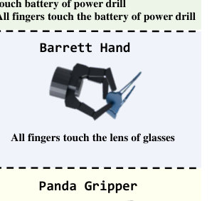
Barrett Technology (Barrett Advanced Robotics), USA · 7-DoF backdrivable cable-driven research arm (4-DoF version also sold) + 3-finger, 8-axis grasper
💲 on request (no public list price; Barrett's 2022 support policy prices contracts as a percentage of list price but does not state the list price)
The WAM is a cable-driven arm that can be pushed by hand (backdrivable), with almost no gear backlash and a reach of about 1 m. It is often paired with the 3-finger BarrettHand. Researchers use it because its compliant, torque-controllable joints work well for learning from demonstration, kinesthetic teaching, impedance control and grasping research. Its full-source software is also open to users.
| DoF | 7 (arm: 4-DoF base + 3-DoF wrist) + BarrettHand: 8 axes, 4 motors, 3 fingers |
|---|
| Payload | Arm: ≈3 kg at 7-DoF, ≈4 kg at 4-DoF (from memory, not confirmed in sources); BarrettHand: 6 kg |
|---|
| Reach | ≈1 m |
|---|
| Weight | Arm ≈27 kg at 7-DoF (from memory, not confirmed in sources); BarrettHand: 980 g |
|---|
| Speed | ≈3 m/s max end-effector speed (from memory, not confirmed in sources) |
|---|
| Power | 7-DoF: 27 W at rest, 45 W typical (2 kg payload), 800 W peak; 4-DoF: 18 W at rest, 28 W typical, 600 W peak |
|---|
Used in 3 CoRL 2026 papers
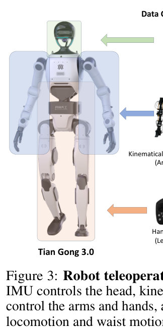
Beijing Humanoid Robot Innovation Center (X-Humanoid); the Walker research version was co-developed and sold by UBTECH Robotics · full-size bipedal humanoid
💲 ≈ ¥299,000 ≈ $41,200 (2025, base Tiangong Walker research model)
An all-electric, full-size humanoid built as an open platform for embodied-AI research. Researchers use it to study whole-body control and reinforcement-learning walking and running on difficult ground like slopes, steps, sand and snow. Its open-source design also lets them build their own software on top of it.
| DoF | 20 (not counting hands) |
|---|
| Height | ≈170 cm |
|---|
| Speed | up to 10 km/h running |
|---|
Used in 3 CoRL 2026 papers
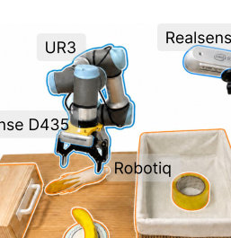
Universal Robots (Denmark, a Teradyne company) · 6-DoF collaborative tabletop arm (cobot)
💲 ≈ $33,000 USD for the arm with controller and teach pendant from a reseller (2025); UR does not publish a list price, and resellers ask about $23,000–$39,500
UR's smallest and lightest e-Series cobot. It has a 3 kg payload, a 500 mm reach, ±0.03 mm repeatability and infinite rotation on the last wrist joint. Researchers use it as a compact, precise, low-cost manipulator that works safely next to people. Its open RTDE/ROS interfaces, robot models in simulators and wide use in other labs make results easier to reproduce.
| DoF | 6 rotating joints |
|---|
| Payload | 3 kg (6.6 lb) |
|---|
| Reach | 500 mm (19.7 in); a newer UR3e-540 version reaches 540 mm |
|---|
| Weight | ≈ 11.2 kg (24.7 lb) including cable |
|---|
| Repeatability | ±0.03 mm |
|---|
| Footprint | Ø128 mm |
|---|
| Power consumption | ≈ 150 W average on a typical program, 300 W max average |
|---|
| IP rating | IP54 |
|---|
Used in 3 CoRL 2026 papers
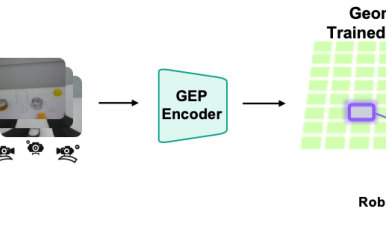
Universal Robots (Teradyne) · 6-DoF collaborative robot arm (cobot)
💲 ≈ $38,363 (2025, arm + control box + teach pendant, US distributor list price)
The UR7e is a lightweight e-Series cobot that replaces the UR5e. It has the same 850 mm form factor but can carry 7.5 kg. Researchers use it as a standard platform for manipulation, teleoperation and imitation-learning work because of its ±0.03 mm repeatability, built-in force/torque sensing, 500 Hz control interface (RTDE / ur_rtde / ROS drivers) and certified collaborative safety.
| DoF | 6 rotating joints |
|---|
| Payload | 7.5 kg (16.5 lb) |
|---|
| Reach | 850 mm (33.5 in) |
|---|
| Weight | 20.7 kg arm (control box 12 kg) |
|---|
| Repeatability | ±0.03 mm (ISO 9283) |
|---|
| Footprint | Ø151 mm |
|---|
| Power | 250 W typical, 570 W max |
|---|
| Control frequency | 500 Hz |
|---|
Used in 2 CoRL 2026 papers
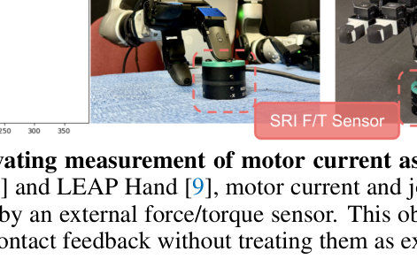
Unitree Robotics · dexterous hand (3-finger, 7-DoF)
💲 ≈ $7,800 per hand with tactile sensors, ≈ $6,500 without (2025, reseller price; Unitree does not publish a price and usually sells it bundled with the G1 EDU)
A three-finger hand with 7 force-controlled joints (thumb 3, index 2, middle 2) and 33 tactile sensors, built mainly for the Unitree G1 humanoid. Researchers use it for teleoperation, collecting data for imitation learning and sim-to-real dexterous manipulation, because its 1 kHz hybrid force/position control and open-source SDK fit a widely used humanoid platform.
| DoF | 7 per hand (thumb ×3, index ×2, middle ×2); 6 direct-drive + 1 geared micro brushless force-control joints |
|---|
| Payload | 500 g max (grasping a 5 cm round hard object, palm down) |
|---|
| Weight | 710 g |
|---|
| Size | 175 × 88 × 77 mm |
|---|
| Tactile sensors | 33 per hand (sensing range 10–2,500 g) |
|---|
| Control rate | 1000 Hz |
|---|
| Voltage | 12–58 V |
|---|
Used in 2 CoRL 2026 papers
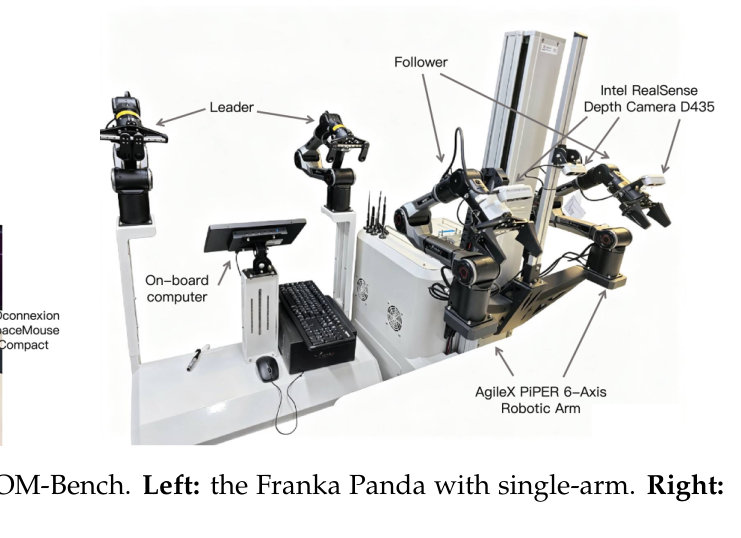
AgileX Robotics · Wheeled bimanual mobile manipulator (two 6-DoF follower arms plus two master arms on a TRACER differential-drive base)
💲 On request (AgileX does not publish a price). Reseller prices: from €52,000 excl. VAT (€62,400 incl. VAT) at Generation Robots in 2025, and €23,648 at researchrobots.eu, which may be an older configuration. Neither listing shows a date, so the year is approximate.
An open-source mobile manipulation and teleoperation platform built on Stanford's Mobile ALOHA design. It puts four lightweight arms, wrist and top cameras and an onboard computer on AgileX's TRACER base. Researchers use it as a ready-made, cheaper Mobile ALOHA to collect bimanual demonstrations and train imitation-learning and embodied-AI policies.
| DoF | 6 per arm (2 follower arms + 2 master arms) |
|---|
| Payload | 1.5 kg per arm; 100 kg for the mobile base |
|---|
| Reach | 626 mm per arm (some resellers list 610 mm) |
|---|
| Weight | 28–30 kg (other sources list up to 32.7 kg) |
|---|
| Speed | Base up to 1.6 m/s |
|---|
| Battery | 4 h charging time; about 4 h runtime per third-party listings |
|---|
Used in 2 CoRL 2026 papers
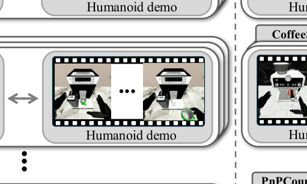
Fourier (formerly Fourier Intelligence), Shanghai, China · full-size bipedal humanoid
💲 discontinued; last ≈ $150,000 (≈ 2024–2025, distributor/third-party estimate; Fourier sold it by quote only)
Fourier's first humanoid, a human-sized walking robot launched in 2023 and marketed as the first mass-produced humanoid. Researchers use it as a full-body platform for locomotion and whole-body control, learning from human demonstrations and sim-to-real work. It was replaced by the GR-2 in 2024.
| DoF | 40 (whole body including hands; about 23 actuated joints used for whole-body control in papers) |
|---|
| Payload | 50 kg (maker claim) |
|---|
| Weight | 55 kg |
|---|
| Height | 165 cm |
|---|
| Speed | 5 km/h walking |
|---|
| Peak joint torque | 300 Nm (hip) |
|---|
Used in 2 CoRL 2026 papers
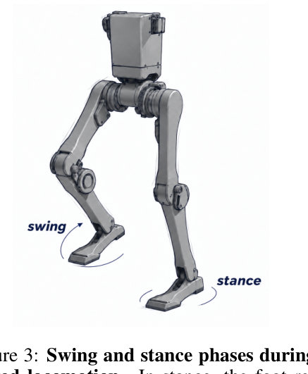
Unitree Robotics · full-size bipedal humanoid
💲 ≈ $90,000 (2024; Unitree only says 'below $90k' and asks buyers to contact sales; resellers charge about $95k–$112k)
The H1 is Unitree's first full-size electric humanoid robot. It is about 1.8 m tall and has high-torque joint motors, a 3D LiDAR and a depth camera. Researchers use it as a fairly affordable, open-SDK platform (C++/Python/ROS2) for learning-based locomotion, whole-body control and teleoperation; HumanPlus and H2O are examples of projects built on it.
| DoF | 19 (5 per leg, 4 per arm, 1 torso) |
|---|
| Weight | ≈ 47 kg |
|---|
| Height | ≈ 180 cm (1805 × 570 × 220 mm) |
|---|
| Speed | 3.3 m/s walking/running speed (potential > 5 m/s) |
|---|
| Battery | 864 Wh, quickly replaceable |
|---|
| Max joint torque | 360 N·m |
|---|
Used in 2 CoRL 2026 papers
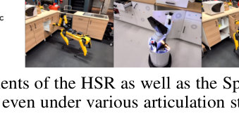
Toyota Motor Corporation · Mobile manipulator (omnidirectional base with a single multi-DoF arm and a telescoping torso)
💲 on request (not sold commercially; Toyota loans or leases units to research groups through the HSR Developers' Community)
HSR is a compact home-assistance robot that can drive in any direction and pick up and fetch objects with its arm, built to help elderly and disabled people at home. Toyota doesn't sell it. Instead, it lends units to universities through the HSR Developers' Community, where it's used as a shared standard platform for research and competitions like RoboCup@Home on mobile manipulation, household tasks and robot learning.
| Payload | 1.2 kg (objects up to 130 mm wide) |
|---|
| Weight | ≈ 37 kg |
|---|
| Height | 1005–1350 mm (telescoping torso; shoulder height 340–1030 mm) |
|---|
| Speed | 0.8 km/h max |
|---|
| Footprint | 430 mm body diameter |
|---|
| Terrain | steps up to 5 mm, inclines up to 5° |
|---|
Used in 2 CoRL 2026 papers
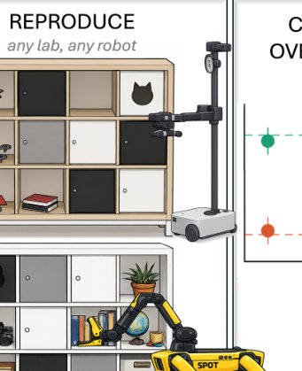
Hello Robot Inc. (Martinez, California, USA) · Mobile manipulator: a differential-drive base with a vertical lift and a telescoping arm
💲 $24,950 (Stretch 3, 2024–2025); Hello Robot now sells the successor Stretch 4 for $29,950 (2026)
Stretch is a lightweight, open-source mobile manipulator. A telescoping arm on a lift mast lets it reach from the floor to countertops in real homes. Researchers use it because it is cheap compared with robots like the PR2, small and safe enough to work around people, and comes with ROS 2 and Python SDKs plus the Stretch AI toolkit. Stretch AI includes ready-made learning policies such as ACT and Diffusion Policy, and Meta's OK-Robot work used Stretch.
| DoF | Telescoping arm and lift, 3-DoF wrist (yaw/pitch/roll), 1-DoF gripper, 2-DoF pan-tilt head, differential-drive base |
|---|
| Payload | 2 kg |
|---|
| Reach | 0.52 m arm extension; reaches from floor to cabinet height |
|---|
| Weight | 24.5 kg |
|---|
| Height | 141 cm (size 33 × 34 × 141 cm) |
|---|
| Battery | 2–5 h runtime |
|---|
Used in 2 CoRL 2026 papers
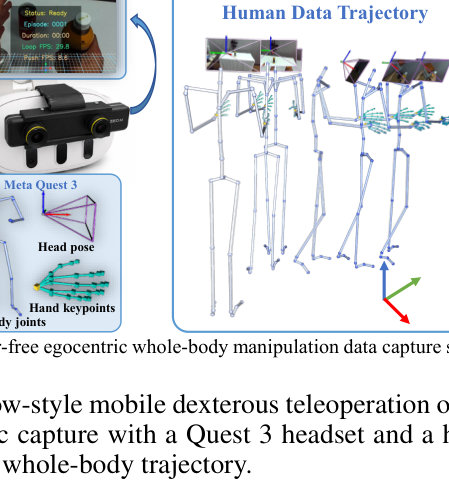
Astribot (Stardust Intelligence / 星尘智能, Shenzhen, China) · Wheeled humanoid with a mobile base and two cable-driven 7-DoF arms (no legs)
💲 On request: Astribot does not publish a price and sells by quote. Chinese reports put the research edition at about ¥500,000 (≈ $69,000, 2025); other estimates range from $96,000 to $150,000.
Astribot S1 is a human-sized humanoid on a wheeled base. Its two 7-DoF arms are cable-driven, and its speed and dexterity are close to an adult's. Researchers use it to study whole-body mobile manipulation and imitation learning, collecting training data through VR teleoperation with the Astribot Suite.
| DoF | 23 in total, including 7 per arm (14 more in the hands) |
|---|
| Payload | 5 kg per arm at full horizontal reach (10 kg per arm is also reported) |
|---|
| Reach | 194 cm arm span |
|---|
| Weight | 80 kg |
|---|
| Height | 170 cm |
|---|
| Speed | At least 10 m/s at the end effector; repeatability ±0.1 mm |
|---|
| Battery | 4–6 h runtime |
|---|
Used in 2 CoRL 2026 papers
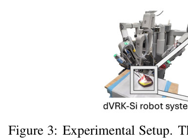
Intuitive Surgical / Intuitive Foundation, which supplies the retired da Vinci hardware. The open-source electronics, firmware and software come from Johns Hopkins University and WPI. · Teleoperated surgical robot: 2 patient-side manipulator arms (PSMs) plus 2 master tool manipulators (MTMs) on a surgeon's console
💲 on request (not sold commercially: Intuitive Foundation provides the retired hardware to selected institutions, which then build or buy the open-source controllers)
Research platform built from decommissioned clinical da Vinci surgical robots, with open-source electronics, firmware and software that give full access to every level of control. It is installed at more than 40 institutions worldwide. Researchers use it to study surgical autonomy, imitation learning and teleoperation on real surgical hardware with EndoWrist instruments.
| DoF | PSM: 7 DoF (6 + instrument gripper); MTM: 8 DoF (7 + gripper) |
|---|
| Configuration | 2 PSMs + 2 MTMs; first-generation systems may also include an endoscopic camera manipulator (ECM) |
|---|
| Instruments | Intuitive EndoWrist wristed instruments (8 mm) |
|---|
| Base platform | First-generation da Vinci (clinical release 2000); dVRK-Si supports S/Si patient-side arms |
|---|
Used in 2 CoRL 2026 papers
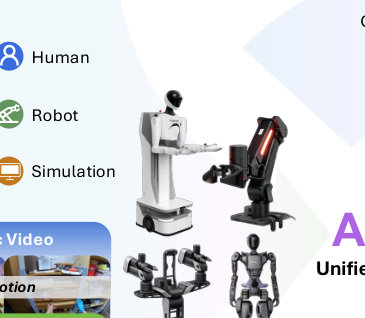
Galaxea Dynamics (Galaxea AI, 星海图, Suzhou, China) · Wheeled dual-arm humanoid / mobile manipulator (the A1X is its 6-DoF arm, also sold on its own)
💲 ≈ $39,999 (2025–2026, base R1 Lite without accessory kit; R1 Pro is $69,999)
The R1 Lite is a wheeled bimanual robot with two Galaxea A1X 6-DoF arms and G1 grippers on a lifting torso and an omnidirectional base. It comes with teleoperation and data-collection tooling, so researchers use it to collect mobile-manipulation data and to train imitation-learning and vision-language-action (VLA) policies. The larger R1 Pro has 7-DoF arms and 26 DoF and costs $69,999.
| DoF | 23 total (2 × 6-DoF A1X arms, 2 × 1-DoF grippers, 3-DoF torso, 6-DoF chassis) |
|---|
| Payload | 3 kg rated / 5 kg peak per arm at 0.6 m |
|---|
| Reach | 600 mm arm length; vertical workspace 0–170 cm |
|---|
| Weight | 96 kg including battery (2026 version) |
|---|
| Height | 1280 mm (product page); up to 1560 mm max height (2026 version) |
|---|
| Speed | 1.5 m/s chassis |
|---|
| Battery | 48 V, 15 Ah, 720 Wh lithium |
|---|
Used in 2 CoRL 2026 papers
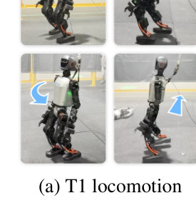
Booster Robotics (Booster Robotics Technology Co., Ltd., China) · humanoid (compact bipedal, 23–41 DoF)
💲 discontinued (being replaced by the Booster T2); last list price ≈ $41,224 for the T1 Standard 23-DoF version at RobotShop (2025). Other US resellers have listed the T1 at about $29,800 to $34,999.
A compact, open, lightweight humanoid of about 1.2 m and 30 kg, built for developers and researchers. It can be force-controlled and survives falls, and it was the RoboCup 2025 AdultSize champion. Locomotion and RL labs and RoboCup teams use it because it is relatively cheap, works with ROS 2, has NVIDIA Jetson AGX Orin compute and comes with open-source training and deployment code.
| DoF | 23 in the Standard version (2-DoF head, 4 per arm, 1 waist, 6 per leg), up to 41 with hands |
|---|
| Weight | ≈30 kg |
|---|
| Height | 118 cm (118 × 47 × 23 cm) |
|---|
| Reach | arm length 45 cm, leg length 57 cm |
|---|
| Battery | ≈2 h walking, ≈4 h standing |
|---|
| Max joint torque | 130 N·m |
|---|
| Compute | Intel i7 CPU + NVIDIA Jetson AGX Orin (≈200 TOPS) |
|---|
Used in 2 CoRL 2026 papers
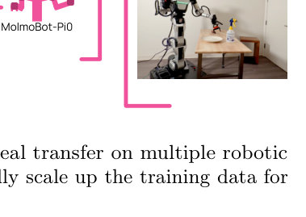
Rainbow Robotics (South Korea; KAIST spin-off, majority-owned by Samsung) · Wheeled dual-arm mobile manipulator (semi-humanoid): two 7-DoF arms on a 6-DoF torso/leg over a wheeled base
💲 ≈ $80,000 (2024, research-platform pre-order price, excl. VAT; commercial version $120,000; current price on request)
A wheeled, humanoid-style robot with two 7-DoF arms on a liftable 6-DoF torso, sold as a research platform with an open SDK/APIs, an onboard GPU and an optional leader-arm teleoperation kit. Researchers use it as an off-the-shelf platform for whole-body mobile manipulation, teleoperated data collection and imitation/AI policy learning.
| DoF | 24 total (2 × 7-DoF arms, 6-DoF torso/leg, 2-DoF head, wheels); differential-drive and Mecanum versions available |
|---|
| Payload | 3 kg per arm |
|---|
| Reach | 600 mm to wrist, plus hand (official page; some sources say 640 mm) |
|---|
| Weight | 131 kg (standard wheeled base; 170 kg with the Mecanum base) |
|---|
| Height | ≈ 1.4 m (from third-party sources; other listings say 1.47–1.6 m) |
|---|
| Speed | 1.5 m/s max driving speed (2.5 m/s claimed at the 2024 launch) |
|---|
| Battery | 50 V, 25 Ah (1,250 Wh); 50 V, 50 Ah (2,500 Wh) with the Mecanum base; ≈ 3 h runtime (third-party figure, not official) |
|---|
Used in 2 CoRL 2026 papers
no photo found in the papers
Trossen Robotics (Interbotix) · 6-DoF desktop robot arm with parallel gripper
💲 discontinued (listed as a legacy arm and out of stock, with newer-generation arms on pre-order); last list price $6,742.95 (≈2025)
A low-cost 6-DoF desktop arm in Trossen's Interbotix X-Series, driven by DYNAMIXEL X-Series servos and supported by ROS. Researchers use it for imitation learning and teleoperation on a budget. It is best known as the 'follower' arm in the ALOHA bimanual setups.
| DoF | 6 (plus gripper; 9 servos in total) |
|---|
| Payload | 750 g working payload (Trossen advises no more than 50% arm extension at this weight) |
|---|
| Reach | 750 mm (1500 mm total span) |
|---|
| Repeatability | 1 mm (accuracy 5–8 mm) |
|---|
| Gripper stroke | 42–116 mm |
|---|
| Joint range | waist, forearm roll and wrist rotate ±180° |
|---|
Used in 2 CoRL 2026 papers
no photo found in the papers
Shenzhen Yuejiang Technology Co., Ltd. (DOBOT) · 4-axis desktop robot arm
💲 ≈ $1,899 (V3 Standard Edition, US reseller, ≈2025); Canadian reseller lists $1,999–$2,399
A small, low-cost desktop arm made for education. It can take different end tools such as a suction cup, gripper, pen, laser or 3D-print head. Researchers use it as a cheap tabletop platform for pick-and-place and imitation or reinforcement-learning experiments, controlled through USB, Wi-Fi or Bluetooth with SDKs in many programming languages.
| DoF | 4 axes |
|---|
| Payload | 500 g max |
|---|
| Reach | 320 mm |
|---|
| Weight | ≈4 kg (RoboDK listing) |
|---|
| Speed | 320°/s per joint (with 250 g load) |
|---|
| Repeatability | 0.2 mm |
|---|
Used in 1 CoRL 2026 paper
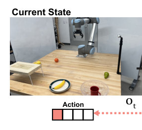
Universal Robots A/S (a Teradyne company), Denmark · 6-DoF collaborative robot arm (cobot)
💲 on request (no official list price); ≈ $45,000 (2025) for the bare arm with its control box and teach pendant, roughly $45,000–60,000 from distributors
A medium-sized 6-axis collaborative arm with a long 1300 mm reach, a 12.5 kg payload and a built-in force/torque sensor at the tool flange. Researchers use it because it is a widely available industrial cobot that is safe around people, has mature ROS/RTDE drivers and is accurate enough for manipulation, contact-rich learning and large-workspace tasks. Universal Robots renamed it UR12e in 2025 to reflect its payload; the arm itself is unchanged.
| DoF | 6 rotating joints |
|---|
| Payload | 12.5 kg (10 kg on early units made before the 2021 payload upgrade) |
|---|
| Reach | 1300 mm |
|---|
| Weight | 33.3 kg (arm) |
|---|
| Speed | TCP ≈ 1 m/s; joints 120°/s (base and shoulder) and 180°/s (others) |
|---|
| Repeatability | ±0.05 mm (ISO 9283) |
|---|
| Power | 615 W max, ≈350 W typical |
|---|
Used in 1 CoRL 2026 paper
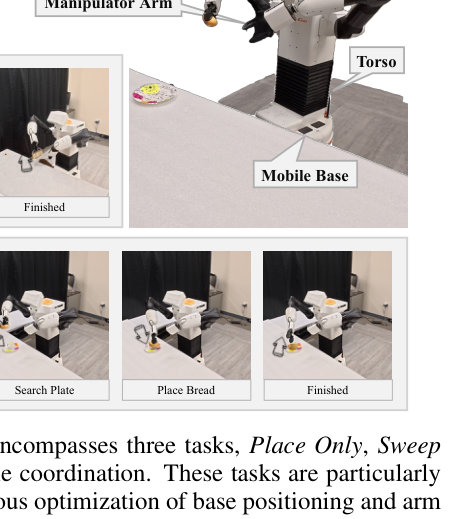
PAL Robotics (Barcelona, Spain) · Mobile manipulator (wheeled base, lifting torso, 7-DoF arm, pan-tilt head)
💲 On request; the list price is not public. Third-party reports give about €29,000–59,000 depending on configuration (launch-era figure, ~2016)
TIAGo is an indoor mobile service robot with a lifting torso, a 7-DoF arm with interchangeable end-effectors, an RGB-D head camera and a laser-based navigation sensor. Researchers use it because it runs fully on ROS and can be customised, so it serves as a standard platform for work on manipulation, navigation, HRI and robot learning.
| DoF | Arm 7 (4 arm + 3 wrist), torso lift 1, head 2, mobile base 2; PAL parallel gripper 2 |
|---|
| Payload | 3 kg at full extension, without end-effector (datasheet); the SDK docs list 2 kg |
|---|
| Reach | 87 cm without end-effector |
|---|
| Weight | 70–72 kg |
|---|
| Height | 110–145 cm (35 cm torso lift) |
|---|
| Speed | 1.5 m/s max per the datasheet (the SDK docs list 1 m/s) |
|---|
| Battery | 36 V, 20 Ah; 4–5 h with one battery, 8–10 h with two |
|---|
Used in 1 CoRL 2026 paper
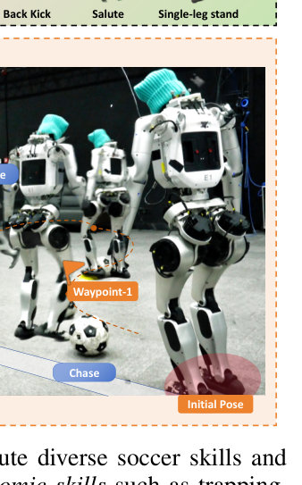
Noetix Robotics (Beijing Songyan Dynamics / 松延动力) · bipedal humanoid (child-size, 23–28 DoF)
💲 Base E1 from ¥39,900 CNY (≈ $5,500) at launch presale (2025). The EDU developer version that researchers usually need has no public factory price; Western resellers list it at ≈ $30,800 (2026), and the base E1 at ≈ $20,000 through the same resellers.
The E1 is a 1.36–1.40 m bipedal humanoid that Noetix sells for developers, education and research. Researchers use it because it is cheap for a full-body humanoid and moves well: it has 150 N·m force-controlled knee joints, runs up to 3.5 m/s using reinforcement-learning locomotion, and has swappable batteries. The EDU version adds an NVIDIA Jetson Orin Nano Super board for running your own code.
| DoF | 23–28 total (6 per leg, 5 per arm; can be expanded with dexterous hands) |
|---|
| Payload | up to 5 kg while walking continuously |
|---|
| Weight | ≈ 40 kg |
|---|
| Height | 1.36 m (the official page says 140 cm) |
|---|
| Speed | up to 3.5 m/s |
|---|
| Battery | 10.6 Ah quick-swap lithium-ion pack (about 5 s to swap), 2–4 h runtime |
|---|
Used in 1 CoRL 2026 paper
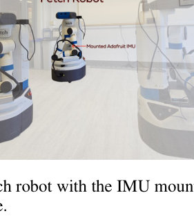
Fetch Robotics (bought by Zebra Technologies in 2021) · Wheeled mobile manipulator (differential-drive base, lifting torso, 7-DoF arm, parallel gripper, pan-tilt head)
💲 discontinued; price was on request, last estimated at ≈ $100,000 (third-party estimate, year not given)
A single-arm mobile robot built for indoor spaces where people work. It has a 7-DoF arm, a torso that raises and lowers, and a laser scanner plus RGB-D depth cameras. Researchers use it as a ready-made, ROS-based standard platform for mobile manipulation, pick-and-place and robot-learning experiments, and it is also a common simulated robot in RL benchmarks.
| DoF | 13 total (base, torso lift, 7-DoF arm, gripper, head) |
|---|
| Payload | 6 kg at full arm extension (not counting the gripper) |
|---|
| Reach | 940.5 mm arm length to gripper mount |
|---|
| Weight | 113.3 kg (250 lb) |
|---|
| Height | 1,096 mm with torso down / 1,491 mm with torso up |
|---|
| Speed | 1.0 m/s max base speed; 1.0 m/s max end-effector speed |
|---|
Used in 1 CoRL 2026 paper
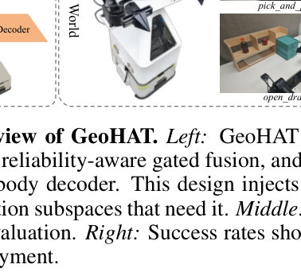
DISCOVER Robotics (求之科技, Tsinghua AIR spin-off) · 6-DoF lightweight robotic arm (7 axes when fitted with a gripper)
💲 on request
AIRBOT Play is a light, highly integrated 6-DoF arm that runs from a 24 V supply and needs no separate control cabinet. Researchers use it in embodied-AI and imitation-learning work because it is easy to mount on desks, mobile bases and quadrupeds, and it comes with an open Python/C++/ROS 2 SDK, gravity compensation and hand guiding. It also has a matching AIRBOT R1 leader arm for teleoperation and data collection, plus simulation models for MuJoCo, Isaac Sim and Gazebo.
| DoF | 6 (7 with G2/E2 gripper) |
|---|
| Payload | 1.5 kg (continuous, rated) |
|---|
| Reach | 647 mm |
|---|
| Weight | 3.78 kg |
|---|
| Repeatability | ±0.1 mm |
|---|
| Power | 24 V ±5% DC |
|---|
Used in 1 CoRL 2026 paper
no photo found in the papers
PSYONIC, Inc. (San Diego, USA) · dexterous hand (5-finger anthropomorphic, 6 actuated DoF)
💲 ≈ $15,000 (2024–2025); the research version is sold by quote, and PSYONIC does not publish an official price
A bionic prosthetic hand with touch sensing that PSYONIC also began selling to robotics researchers in late 2022. Researchers use it because it is light, fast, tough and human-shaped, streams fingertip touch data, and has an open API. It has been used by groups such as NASA (Valkyrie), Meta and Apptronik.
| DoF | 6 actuated DoF (6 brushless DC motors: flexion of each finger plus thumb rotation) |
|---|
| Payload | Up to ≈ 66 N (14.8 lbf) grip force in a power grasp |
|---|
| Weight | ≈ 490 g |
|---|
| Speed | Fingers close in ≈ 0.2 s |
|---|
| Sensors | 30 fingertip touch sensor values streamed through the API |
|---|
| Battery | 2200 mAh, USB-C rechargeable (prosthetic version) |
|---|
Used in 1 CoRL 2026 paper
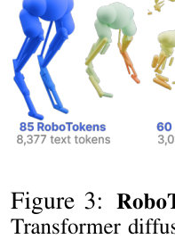
Agility Robotics · bipedal legged robot (legs only, no torso or arms)
💲 discontinued; last price ≈ $250,000 (2017–2019; one third-party database says $300,000)
Cassie is a dynamic biped with legs inspired by ostriches. Agility Robotics spun it out of Oregon State University's ATRIAS work and sold it as the first dynamic bipedal robot that researchers could buy. Labs used it as the main platform for sim-to-real reinforcement learning of bipedal walking and running. Only about 10 units were sold, mostly to universities, and it has since been replaced by Agility's humanoid Digit.
| DoF | 10 actuated (5 per leg, series-elastic actuators); 14 total with passive spring joints (7 per leg) |
|---|
| Weight | 31 kg |
|---|
| Height | 1.15 m |
|---|
| Speed | up to about 4 m/s running (100 m Guinness record in 24.73 s); walking about 5 km/h |
|---|
| Battery | about 0.9 h of running (finished an untethered 5K on one charge); early claims of 6–8 h when walking |
|---|
Used in 1 CoRL 2026 paper